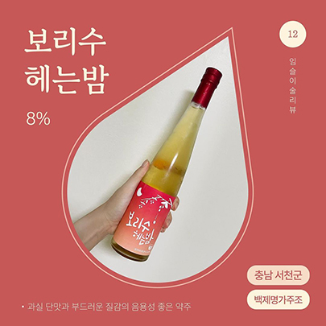
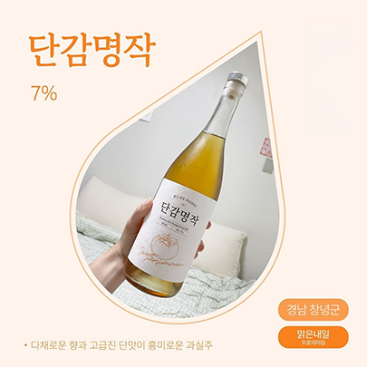
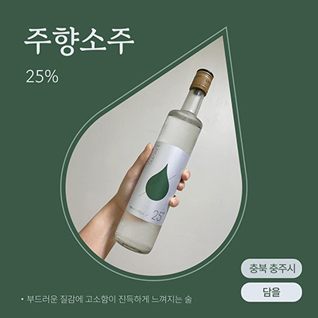
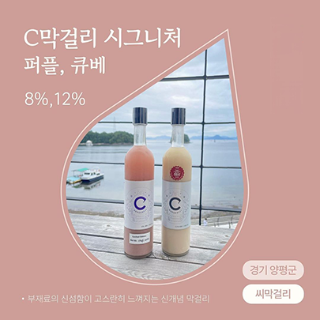

탁주
곡류(쌀,밀,보리 등) 원료에 국(누룩, 입국 등)과 물을 섞어
일정한 온도에서 발효시킨 술덧을 체 등으로 걸러 제조한 술

청주
막걸리와 같은 방식으로 술을 빚고 발효시킨 술덧에서
술지게미를 걸러내어 맑게 만든 술
과실주
과실을 발효시켜 만든 술. 과일이나 과즙을 발효하여 만든 술과
술에 과일을 담그거나 섞어 만든 것으로 나뉜다.


증류주
막걸리, 약주, 청주와 같은 발효주를 증류하여 만든 술로,
주세법상의 증류식소주, 일반 증류주, 리큐르 등이 있다.
기타주류
주세법상의 주정, 발효주류, 증류주류에
속하지 않는 주류를 총칭한다.
